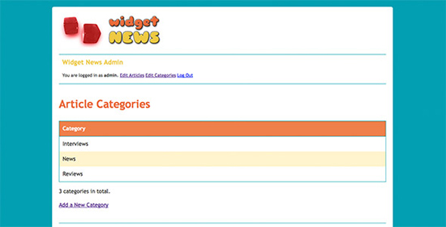
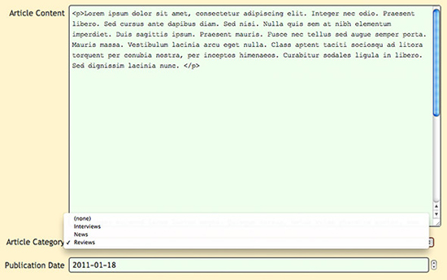

<?php
require( "config.php" );
$action = isset( $_GET['action'] ) ? $_GET['action'] : "";
switch ( $action ) {
case 'archive':
archive();
break;
case 'viewArticle':
viewArticle();
break;
default:
homepage();
}
function archive() {
$results = array();
$categoryId = ( isset( $_GET['categoryId'] ) && $_GET['categoryId'] ) ? (int)$_GET['categoryId'] : null;
$results['category'] = Category::getById( $categoryId );
$data = Article::getList( 100000, $results['category'] ? $results['category']->id : null );
$results['articles'] = $data['results'];
$results['totalRows'] = $data['totalRows'];
$data = Category::getList();
$results['categories'] = array();
foreach ( $data['results'] as $category ) $results['categories'][$category->id] = $category;
$results['pageHeading'] = $results['category'] ? $results['category']->name : "Article Archive";
$results['pageTitle'] = $results['pageHeading'] . " | Widget News";
require( TEMPLATE_PATH . "/archive.php" );
}
function viewArticle() {
if ( !isset($_GET["articleId"]) || !$_GET["articleId"] ) {
homepage();
return;
}
$results = array();
$results['article'] = Article::getById( (int)$_GET["articleId"] );
$results['category'] = Category::getById( $results['article']->categoryId );
$results['pageTitle'] = $results['article']->title . " | Widget News";
require( TEMPLATE_PATH . "/viewArticle.php" );
}
function homepage() {
$results = array();
$data = Article::getList( HOMEPAGE_NUM_ARTICLES );
$results['articles'] = $data['results'];
$results['totalRows'] = $data['totalRows'];
$data = Category::getList();
$results['categories'] = array();
foreach ( $data['results'] as $category ) $results['categories'][$category->id] = $category;
$results['pageTitle'] = "Widget News";
require( TEMPLATE_PATH . "/homepage.php" );
}
?>
Рассмотрим подробно изменения функций в index.php:
archive()Оригинальная функция
archive()просто выводила список всех статей в CMS. Мы адаптируем функциюarchive()так, чтобы она принимала опциональный параметрcategoryId. ЕслиcategoryIdзадан, то функция возвращает соответствующий объектCategoryс помощью вызоваCategory::getById(), и если действие было успешным, передает ID категории в функциюArticle::getList()для получения статей только из соответствующей категории.Также добавляем код в функцию
archive()для получения всех категорий в базе данных и сохранения их в$results['categories']с ID категории в качестве ключа. Шаблон страницы архиваarchive.phpиспользует данный массив для вывода имени категории для каждой статьи.Создаем переменную
$results['pageHeading'], которая содержит либо имя категории (еслиcategoryIdбыло задано), либо текст "Article Archive". Данное значение будет отображаться в заголовке страницы архива. Также создаем переменную$results['pageTitle']для использования в элементе<title>. Просто для вывода названия сайта "Widget News" в заголовке страницы.viewArticle()Здесь мы делаем только одно добавление: возвращаем объект
Categoryсоответствующий статье с помощью вызова методаCategory::getById(), передавая ему значение свойства статьи$categoryId. Полученный объектCategoryсохраняем$results['category']. Будем использовать данный объект для вывода названия категории в шаблонеviewArticle.php.homepage()В функцию
homepage()добавляем три строки. Данный код вызываетCategory::getList()для получения всех категорий в CMS, затем сохраняем категории в$results['categories']с ID категории в качестве ключа. То есть мы можем вывести названия категорий для каждой статьи на главной странице.
Модифицируем скрипт серверной части admin.php
Файл admin.php содержит все функции администратора для нашей CMS. Нужно сделать несколько изменений и добавлений в данном файле для обработки категорий.
Новый код файла admin.php, будет выглядеть следующим образом:
<?php
require( "config.php" );
session_start();
$action = isset( $_GET['action'] ) ? $_GET['action'] : "";
$username = isset( $_SESSION['username'] ) ? $_SESSION['username'] : "";
if ( $action != "login" && $action != "logout" && !$username ) {
login();
exit;
}
switch ( $action ) {
case 'login':
login();
break;
case 'logout':
logout();
break;
case 'newArticle':
newArticle();
break;
case 'editArticle':
editArticle();
break;
case 'deleteArticle':
deleteArticle();
break;
case 'listCategories':
listCategories();
break;
case 'newCategory':
newCategory();
break;
case 'editCategory':
editCategory();
break;
case 'deleteCategory':
deleteCategory();
break;
default:
listArticles();
}
function login() {
$results = array();
$results['pageTitle'] = "Admin Login | Widget News";
if ( isset( $_POST['login'] ) ) {
// User has posted the login form: attempt to log the user in
if ( $_POST['username'] == ADMIN_USERNAME && $_POST['password'] == ADMIN_PASSWORD ) {
// Login successful: Create a session and redirect to the admin homepage
$_SESSION['username'] = ADMIN_USERNAME;
header( "Location: admin.php" );
} else {
// Login failed: display an error message to the user
$results['errorMessage'] = "Incorrect username or password. Please try again.";
require( TEMPLATE_PATH . "/admin/loginForm.php" );
}
} else {
// User has not posted the login form yet: display the form
require( TEMPLATE_PATH . "/admin/loginForm.php" );
}
}
function logout() {
unset( $_SESSION['username'] );
header( "Location: admin.php" );
}
function newArticle() {
$results = array();
$results['pageTitle'] = "New Article";
$results['formAction'] = "newArticle";
if ( isset( $_POST['saveChanges'] ) ) {
// User has posted the article edit form: save the new article
$article = new Article;
$article->storeFormValues( $_POST );
$article->insert();
header( "Location: admin.php?status=changesSaved" );
} elseif ( isset( $_POST['cancel'] ) ) {
// User has cancelled their edits: return to the article list
header( "Location: admin.php" );
} else {
// User has not posted the article edit form yet: display the form
$results['article'] = new Article;
$data = Category::getList();
$results['categories'] = $data['results'];
require( TEMPLATE_PATH . "/admin/editArticle.php" );
}
}
function editArticle() {
$results = array();
$results['pageTitle'] = "Edit Article";
$results['formAction'] = "editArticle";
if ( isset( $_POST['saveChanges'] ) ) {
// User has posted the article edit form: save the article changes
if ( !$article = Article::getById( (int)$_POST['articleId'] ) ) {
header( "Location: admin.php?error=articleNotFound" );
return;
}
$article->storeFormValues( $_POST );
$article->update();
header( "Location: admin.php?status=changesSaved" );
} elseif ( isset( $_POST['cancel'] ) ) {
// User has cancelled their edits: return to the article list
header( "Location: admin.php" );
} else {
// User has not posted the article edit form yet: display the form
$results['article'] = Article::getById( (int)$_GET['articleId'] );
$data = Category::getList();
$results['categories'] = $data['results'];
require( TEMPLATE_PATH . "/admin/editArticle.php" );
}
}
function deleteArticle() {
if ( !$article = Article::getById( (int)$_GET['articleId'] ) ) {
header( "Location: admin.php?error=articleNotFound" );
return;
}
$article->delete();
header( "Location: admin.php?status=articleDeleted" );
}
function listArticles() {
$results = array();
$data = Article::getList();
$results['articles'] = $data['results'];
$results['totalRows'] = $data['totalRows'];
$data = Category::getList();
$results['categories'] = array();
foreach ( $data['results'] as $category ) $results['categories'][$category->id] = $category;
$results['pageTitle'] = "All Articles";
if ( isset( $_GET['error'] ) ) {
if ( $_GET['error'] == "articleNotFound" ) $results['errorMessage'] = "Error: Article not found.";
}
if ( isset( $_GET['status'] ) ) {
if ( $_GET['status'] == "changesSaved" ) $results['statusMessage'] = "Your changes have been saved.";
if ( $_GET['status'] == "articleDeleted" ) $results['statusMessage'] = "Article deleted.";
}
require( TEMPLATE_PATH . "/admin/listArticles.php" );
}
function listCategories() {
$results = array();
$data = Category::getList();
$results['categories'] = $data['results'];
$results['totalRows'] = $data['totalRows'];
$results['pageTitle'] = "Article Categories";
if ( isset( $_GET['error'] ) ) {
if ( $_GET['error'] == "categoryNotFound" ) $results['errorMessage'] = "Error: Category not found.";
if ( $_GET['error'] == "categoryContainsArticles" ) $results['errorMessage'] = "Error: Category contains articles. Delete the articles, or assign them to another category, before deleting this category.";
}
if ( isset( $_GET['status'] ) ) {
if ( $_GET['status'] == "changesSaved" ) $results['statusMessage'] = "Your changes have been saved.";
if ( $_GET['status'] == "categoryDeleted" ) $results['statusMessage'] = "Category deleted.";
}
require( TEMPLATE_PATH . "/admin/listCategories.php" );
}
function newCategory() {
$results = array();
$results['pageTitle'] = "New Article Category";
$results['formAction'] = "newCategory";
if ( isset( $_POST['saveChanges'] ) ) {
// User has posted the category edit form: save the new category
$category = new Category;
$category->storeFormValues( $_POST );
$category->insert();
header( "Location: admin.php?action=listCategories&status=changesSaved" );
} elseif ( isset( $_POST['cancel'] ) ) {
// User has cancelled their edits: return to the category list
header( "Location: admin.php?action=listCategories" );
} else {
// User has not posted the category edit form yet: display the form
$results['category'] = new Category;
require( TEMPLATE_PATH . "/admin/editCategory.php" );
}
}
function editCategory() {
$results = array();
$results['pageTitle'] = "Edit Article Category";
$results['formAction'] = "editCategory";
if ( isset( $_POST['saveChanges'] ) ) {
// User has posted the category edit form: save the category changes
if ( !$category = Category::getById( (int)$_POST['categoryId'] ) ) {
header( "Location: admin.php?action=listCategories&error=categoryNotFound" );
return;
}
$category->storeFormValues( $_POST );
$category->update();
header( "Location: admin.php?action=listCategories&status=changesSaved" );
} elseif ( isset( $_POST['cancel'] ) ) {
// User has cancelled their edits: return to the category list
header( "Location: admin.php?action=listCategories" );
} else {
// User has not posted the category edit form yet: display the form
$results['category'] = Category::getById( (int)$_GET['categoryId'] );
require( TEMPLATE_PATH . "/admin/editCategory.php" );
}
}
function deleteCategory() {
if ( !$category = Category::getById( (int)$_GET['categoryId'] ) ) {
header( "Location: admin.php?action=listCategories&error=categoryNotFound" );
return;
}
$articles = Article::getList( 1000000, $category->id );
if ( $articles['totalRows'] > 0 ) {
header( "Location: admin.php?action=listCategories&error=categoryContainsArticles" );
return;
}
$category->delete();
header( "Location: admin.php?action=listCategories&status=categoryDeleted" );
}
?>
Расмотрим изменения в файле admin.php подробно:
- Добавления Additions to the
switchblockНам нужно добавить новый функционал в файл
admin.phpдля обработки вывода, создания, редактирования и удаления категорий. Поэтому мы добавляем блокиlistCategories,newCategory,editCategoryиdeleteCategorycaseв выражениеswitchв начале файла. Данные блоки вызывают различные функции для обработки категорий. - Изменения в функциях
newArticle(),editArticle()иlistArticles()Нужно сделать небольшие изменения в каждой из перечисленных функций для получения списка категорий в базе данных и использования в форме редактирования и создания статьи. Полученный список категорий хранится в переменной
$results['categories']. Для функцииlistArticles()мы также используем в качестве ключа ID категории для облегчения применения списка в шаблонеlistArticles.php. listCategories()Данная функция выводит список всех категорий для администратора. Она работает так же как и функция
listArticles(). Все категории извлекаются из базы данных с помощью функцииCategory::getList(), затем сохраняются в массиве$results['categories']. Также записывается общее количество категорий в переменной$results['totalRows']и сохраняется название страницы в переменной$results['pageTitle']. Затем производится проверка на наличие кодов статуса в строке запроса и устанавливаются значения переменных$results['errorMessage']или$results['statusMessage']соответственно. В завершение включается шаблонlistCategories.phpдля вывода списка категорий.newCategory()Функция для добавления новых категорий в базу данных, так же как и
newArticle()добавляет новую статью. Если пользователь передал форму редактирования категории, то функция создает новый объектCategoryobject, наполняет его данными из формы, вызывает функциюinsert()для вставки категории в базу данных, и перенаправляет на страницу со списком категорий, выводя сообщение о сохранении изменений. Если пользователь нажимает кнопку Cancel в форме, то функция просто перенаправляет на список категорий. Если пользователь еще не отправил форму, то функция создает новый пустой объектCategoryдля использования в форме, сохраняет его в$results['category']и включает шаблонeditCategory.phpдля вывода формы редактирования категории.editCategory()Данная функция редактирует существующую категорию в базе данных, позволяя пользователю менять название категории и/или описание.она действует по такому же сценарию, что и
editArticle(). Если форма редактирования отправлена, загружаем категорию из базы данных, сохраняем новые значения формы в объекте Category, и обновляем категорию в базе данных с помощью методаupdate(). Если пользователь отказался от редактирования, то функция перенаправляет его на список категорий. Если пользователь еще не отправил форму, то функция загружает категорию, указанную параметромcategoryIdв строке запроса, сохраняет ее в переменной$results['category']и включает шаблонeditCategory.phpдля вывода заполненной формы редактирования.deleteCategory()Последняя новая функция позволяет удалять категорию из базы данных. Она вызывается, когда пользователь нажимает ссылку Delete This Category (Удалить категорию ) на странице редактирования категорий. Сначала функция получает категорию, заданную параметром запроса
categoryId(если категории нет, то выводится сообщение об ошибке). Затем производится проверка наличия статьей в категории. Если статьи есть , то выводится сообщение об ошибке и происходит выход из функции. Если статей в категории нет, то функция удаляет категорию и перенаправляет на страницу со списком категорий, выводя сообщение об удалении категории.
Клиентская часть
Сначала изменим клиентскую часть, для отображения категории статьи в общем списке и на страницах архива.

homepage.php
Мы сделаем небольшие изменения в шаблоне homepage.php, который выводит главную страницу. Нужно, чтобы категория каждой статьи выводилась ниже названия. Новый код файла cms/templates/homepage.php будет выглядеть так:
<?php include "templates/include/header.php" ?>
<ul id="headlines">
<?php foreach ( $results['articles'] as $article ) { ?>
<li>
<h2>
<span class="pubDate"><?php echo date('j F', $article->publicationDate)?></span><a href=".?action=viewArticle&articleId=<?php echo $article->id?>"><?php echo htmlspecialchars( $article->title )?></a>
<?php if ( $article->categoryId ) { ?>
<span class="category">in <a href=".?action=archive&categoryId=<?php echo $article->categoryId?>"><?php echo htmlspecialchars( $results['categories'][$article->categoryId]->name )?></a></span>
<?php } ?>
</h2>
<p class="summary"><?php echo htmlspecialchars( $article->summary )?></p>
</li>
<?php } ?>
</ul>
<p><a href="./?action=archive">Article Archive</a></p>
<?php include "templates/include/footer.php" ?>
Мы вставили проверку вхождения статьи в категорию с помощью свойства $categoryId. Если статья имеет идентификатор категории, то вставляем элемент <span> с именем категории в код страницы. Для решения используем объект Category из массива $results['categories'], который выбирается с помощью ID категории, а затем выводим свойство name.
Код также помещает имя категории в ссылку, которая ведет на страницу архива для категории, так что пользователь легко может просмотреть все статьи из той же категории.
archive.php
Шаблон archive.php выводит архив статей. В базовом варианте нашей CMS архив просто выводил список всех статей. Однако, теперь функция archive() в index.php может выводить список статей только из указанной категории. То есть нам нужно внести изменения в шаблон для реализации новых возможностей.
Новый код файла cms/templates/archive.php:
<?php include "templates/include/header.php" ?>
<h1><?php echo htmlspecialchars( $results['pageHeading'] ) ?></h1>
<?php if ( $results['category'] ) { ?>
<h3 class="categoryDescription"><?php echo htmlspecialchars( $results['category']->description ) ?></h3>
<?php } ?>
<ul id="headlines" class="archive">
<?php foreach ( $results['articles'] as $article ) { ?>
<li>
<h2>
<span class="pubDate"><?php echo date('j F Y', $article->publicationDate)?></span><a href=".?action=viewArticle&articleId=<?php echo $article->id?>"><?php echo htmlspecialchars( $article->title )?></a>
<?php if ( !$results['category'] && $article->categoryId ) { ?>
<span class="category">in <a href=".?action=archive&categoryId=<?php echo $article->categoryId?>"><?php echo htmlspecialchars( $results['categories'][$article->categoryId]->name ) ?></a></span>
<?php } ?>
</h2>
<p class="summary"><?php echo htmlspecialchars( $article->summary )?></p>
</li>
<?php } ?>
</ul>
<p><?php echo $results['totalRows']?> article<?php echo ( $results['totalRows'] != 1 ) ? 's' : '' ?> in total.</p>
<p><a href="./">Return to Homepage</a></p>
<?php include "templates/include/footer.php" ?>
Мы изменили заголовок <h1> для вывода значения $results['pageHeading'], а не простой надписи "Article Archive" (архив статей). Новая функция archive() динамически формирует заголовок в зависимости от просматриваемой категории.
Затем мы добавляем код для проверки того, что нужно выводить список для определенной категории, а не всех статей в базе данных. Для этого просматриваем переменную $results['category']. Если она имеется, то нужно выводить список для категории, и код формирует в заголовке описание категории.
Цикл, который формирует вывод статей также изменяется. Новый код запускается, если нужно выводить список всех статей и текущая статья включена в категорию. В таком случае добавляется элемент <span>, который содержит имя категории в виде ссылки на страницу архива категории, чтобы пользователь мог просмотреть все статьи из нее.
viewArticle.php
Шаблон viewArticle.php выводит страницу статьи. Новый код файла cms/templates/viewArticle.php:
<?php include "templates/include/header.php" ?>
<h1 style="width: 75%;"><?php echo htmlspecialchars( $results['article']->title )?></h1>
<div style="width: 75%; font-style: italic;"><?php echo htmlspecialchars( $results['article']->summary )?></div>
<div style="width: 75%;"><?php echo $results['article']->content?></div>
<p class="pubDate">Published on <?php echo date('j F Y', $results['article']->publicationDate)?>
<?php if ( $results['category'] ) { ?>
in <a href="./?action=archive&categoryId=<?php echo $results['category']->id?>"><?php echo htmlspecialchars( $results['category']->name ) ?></a>
<?php } ?>
</p>
<p><a href="./">Return to Homepage</a></p>
<?php include "templates/include/footer.php" ?>
Здесь вносится небольшое добавление для вывода названия категории внизу. Название категории является ссылкой на соответствующую страницу архива.
Стили клиентской части
Также нужно внести изменения в таблицу стилей style.css для формирования внешнего вида имен категорий и описаний на главной странице и в архиве.
Новый код файла style.css из папки cms:
/* Style the body and outer container */
body {
margin: 0;
color: #333;
background-color: #00a0b0;
font-family: "Trebuchet MS", Arial, Helvetica, sans-serif;
line-height: 1.5em;
}
#container {
width: 960px;
background: #fff;
margin: 20px auto;
padding: 20px;
-moz-border-radius: 5px;
-webkit-border-radius: 5px;
border-radius: 5px;
}
/* The logo and footer */
#logo {
display: block;
width: 300px;
padding: 0 660px 20px 0;
border: none;
border-bottom: 1px solid #00a0b0;
margin-bottom: 40px;
}
#footer {
border-top: 1px solid #00a0b0;
margin-top: 40px;
padding: 20px 0 0 0;
font-size: .8em;
}
/* Headings */
h1 {
color: #eb6841;
margin-bottom: 30px;
line-height: 1.2em;
}
h2, h2 a {
color: #edc951;
}
h2 a {
text-decoration: none;
}
h3.categoryDescription {
margin-top: -20px;
margin-bottom: 40px;
}
/* Article headlines */
#headlines {
list-style: none;
padding-left: 0;
width: 75%;
}
#headlines li {
margin-bottom: 2em;
clear: both;
}
.pubDate {
font-size: .8em;
color: #eb6841;
text-transform: uppercase;
}
#headlines .pubDate {
display: block;
width: 100px;
padding-top: 4px;
float: left;
font-size: .5em;
vertical-align: middle;
}
#headlines.archive .pubDate {
width: 130px;
}
.summary {
padding-left: 100px;
}
#headlines.archive .summary {
padding-left: 130px;
}
.category {
font-style: italic;
font-weight: normal;
font-size: 60%;
color: #999;
display: block;
line-height: 2em;
}
.category a {
color: #999;
text-decoration: underline;
}
/* "You are logged in..." header on admin pages */
#adminHeader {
width: 940px;
padding: 0 10px;
border-bottom: 1px solid #00a0b0;
margin: -30px 0 40px 0;
font-size: 0.8em;
}
/* Style the form with a coloured background, along with curved corners and a drop shadow */
form {
margin: 20px auto;
padding: 40px 20px;
overflow: auto;
background: #fff4cf;
border: 1px solid #666;
-moz-border-radius: 5px;
-webkit-border-radius: 5px;
border-radius: 5px;
-moz-box-shadow: 0 0 .5em rgba(0, 0, 0, .8);
-webkit-box-shadow: 0 0 .5em rgba(0, 0, 0, .8);
box-shadow: 0 0 .5em rgba(0, 0, 0, .8);
}
/* Give form elements consistent margin, padding and line height */
form ul {
list-style: none;
margin: 0;
padding: 0;
}
form ul li {
margin: .9em 0 0 0;
padding: 0;
}
form * {
line-height: 1em;
}
/* The field labels */
label {
display: block;
float: left;
clear: left;
text-align: right;
width: 15%;
padding: .4em 0 0 0;
margin: .15em .5em 0 0;
}
/* The fields */
input, select, textarea {
display: block;
margin: 0;
padding: .4em;
width: 80%;
}
input, textarea, .date {
border: 2px solid #666;
-moz-border-radius: 5px;
-webkit-border-radius: 5px;
border-radius: 5px;
background: #fff;
}
input {
font-size: .9em;
}
select {
padding: 0;
margin-bottom: 2.5em;
position: relative;
top: .7em;
}
textarea {
font-family: "Trebuchet MS", Arial, Helvetica, sans-serif;
font-size: .9em;
height: 5em;
line-height: 1.5em;
}
textarea#content {
font-family: "Courier New", courier, fixed;
}
/* Place a border around focused fields */
form *:focus {
border: 2px solid #7c412b;
outline: none;
}
/* Display correctly filled-in fields with a green background */
input:valid, textarea:valid {
background: #efe;
}
/* Submit buttons */
.buttons {
text-align: center;
margin: 40px 0 0 0;
}
input[type="submit"] {
display: inline;
margin: 0 20px;
width: 12em;
padding: 10px;
border: 2px solid #7c412b;
-moz-border-radius: 5px;
-webkit-border-radius: 5px;
border-radius: 5px;
-moz-box-shadow: 0 0 .5em rgba(0, 0, 0, .8);
-webkit-box-shadow: 0 0 .5em rgba(0, 0, 0, .8);
box-shadow: 0 0 .5em rgba(0, 0, 0, .8);
color: #fff;
background: #ef7d50;
font-weight: bold;
-webkit-appearance: none;
}
input[type="submit"]:hover, input[type="submit"]:active {
cursor: pointer;
background: #fff;
color: #ef7d50;
}
input[type="submit"]:active {
background: #eee;
-moz-box-shadow: 0 0 .5em rgba(0, 0, 0, .8) inset;
-webkit-box-shadow: 0 0 .5em rgba(0, 0, 0, .8) inset;
box-shadow: 0 0 .5em rgba(0, 0, 0, .8) inset;
}
/* Tables */
table {
width: 100%;
border-collapse: collapse;
}
tr, th, td {
padding: 10px;
margin: 0;
text-align: left;
}
table, th {
border: 1px solid #00a0b0;
}
th {
border-left: none;
border-right: none;
background: #ef7d50;
color: #fff;
cursor: default;
}
tr:nth-child(odd) {
background: #fff4cf;
}
tr:nth-child(even) {
background: #fff;
}
tr:hover {
background: #ddd;
cursor: pointer;
}
/* Status and error boxes */
.statusMessage, .errorMessage {
font-size: .8em;
padding: .5em;
margin: 2em 0;
-moz-border-radius: 5px;
-webkit-border-radius: 5px;
border-radius: 5px;
-moz-box-shadow: 0 0 .5em rgba(0, 0, 0, .8);
-webkit-box-shadow: 0 0 .5em rgba(0, 0, 0, .8);
-box-shadow: 0 0 .5em rgba(0, 0, 0, .8);
}
.statusMessage {
background-color: #2b2;
border: 1px solid #080;
color: #fff;
}
.errorMessage {
background-color: #f22;
border: 1px solid #800;
color: #fff;
}
Добавляем селектор h3.categoryDescription для описания категории, идентификатор #headlines для имени категории и класс .category для вывода названия категории на главной странице и в архиве.
Серверная часть
Осталось изменить шаблоны серверной части. Нужно добавить пару новых шаблонов для вывода списка, добавления, редактирования и удаления категорий. Также нужно модифицировать страницу списка статей для вывода категорий, форму редактирования статьи, чтобы администратор мог добавить категорию для статьи, и заголовок страницы администратора для включения пункта меню, включающего редактор категории.

Добавляем шаблон listCategories.php
Создаем шаблон listCategories.php, который выводит список категорий в базе данных. Он очень похож на listArticles.php (шаблон списка статей).
Код файла listCategories.php в папке cms/templates/admin:
<?php include "templates/include/header.php" ?>
<?php include "templates/admin/include/header.php" ?>
<h1>Article Categories</h1>
<?php if ( isset( $results['errorMessage'] ) ) { ?>
<div class="errorMessage"><?php echo $results['errorMessage'] ?></div>
<?php } ?>
<?php if ( isset( $results['statusMessage'] ) ) { ?>
<div class="statusMessage"><?php echo $results['statusMessage'] ?></div>
<?php } ?>
<table>
<tr>
<th>Category</th>
</tr>
<?php foreach ( $results['categories'] as $category ) { ?>
<tr onclick="location='admin.php?action=editCategory&categoryId=<?php echo $category->id?>'">
<td>
<?php echo $category->name?>
</td>
</tr>
<?php } ?>
</table>
<p><?php echo $results['totalRows']?> categor<?php echo ( $results['totalRows'] != 1 ) ? 'ies' : 'y' ?> in total.</p>
<p><a href="admin.php?action=newCategory">Add a New Category</a></p>
<?php include "templates/include/footer.php" ?>
Данный шаблон достаточно простой. Он включает стандартный заголовок страницы и файл заголовка администратора, где выводится также сообщения о статусе и ошибках. Затем выводится таблица категорий в базе данных. Цикл проходит по всем категориям в массиве $results['categories'] и формирует строку таблицы с именем категории. Строка таблицы ссылается на admin.php?action=editCategory, передавая ID категории, так что администратор может редактировать категорию, нажав на строку таблицы.
Шаблон также выводит общее количество категорий в базе данных, включая ссылку функцию добавления новой категории.
Добавляем editCategory.php
Шаблон editCategory.php выводит форму редактирования, позволяя администратору добавлять категорию или редактировать существующую. Он очень похож на editArticle.php, но немного проще.
Код файла editCategory.php в папке cms/templates/admin:
<?php include "templates/include/header.php" ?>
<?php include "templates/admin/include/header.php" ?>
<h1><?php echo $results['pageTitle']?></h1>
<form action="admin.php?action=<?php echo $results['formAction']?>" method="post">
<input type="hidden" name="categoryId" value="<?php echo $results['category']->id ?>"/>
<?php if ( isset( $results['errorMessage'] ) ) { ?>
<div class="errorMessage"><?php echo $results['errorMessage'] ?></div>
<?php } ?>
<ul>
<li>
<label for="name">Category Name</label>
<input type="text" name="name" id="name" placeholder="Name of the category" required autofocus maxlength="255" value="<?php echo htmlspecialchars( $results['category']->name )?>" />
</li>
<li>
<label for="description">Description</label>
<textarea name="description" id="description" placeholder="Brief description of the category" required maxlength="1000" style="height: 5em;"><?php echo htmlspecialchars( $results['category']->description )?></textarea>
</li>
</ul>
<div class="buttons">
<input type="submit" name="saveChanges" value="Save Changes" />
<input type="submit" formnovalidate name="cancel" value="Cancel" />
</div>
</form>
<?php if ( $results['category']->id ) { ?>
<p><a href="admin.php?action=deleteCategory&categoryId=<?php echo $results['category']->id ?>" onclick="return confirm('Delete This Category?')">Delete This Category</a></p>
<?php } ?>
<?php include "templates/include/footer.php" ?>
В шаблон включаются файлы заголовков, затем выводится содержание $results['pageTitle'], которое имеет значения либо "New Article Category"(новая категория статьи), либо "Edit Article Category"(редактирование категории статьи). И создается форма, которая отправляется в admin.php со значением переменной $results['formAction'] ("newCategory" или "editCategory") в параметре action.
Сама форма включает скрытое поле categoryId для отслеживания ID текущей редактируемой статьи (если она есть). Выводятся сообщения об ошибках, поля для названия категории и описания, а также кнопки для сохранения и отмены изменений.
Шаблон также включает ссылку на удаление текущей редактируемой категории и нижний колонтитул страницы.
Изменяем listArticles.php
Нужно изменить шаблон для списка статей, чтобы реализовать новый функционал. Сохраняем новый код файла cms/templates/admin/listArticles.php:
<?php include "templates/include/header.php" ?>
<?php include "templates/admin/include/header.php" ?>
<h1>All Articles</h1>
<?php if ( isset( $results['errorMessage'] ) ) { ?>
<div class="errorMessage"><?php echo $results['errorMessage'] ?></div>
<?php } ?>
<?php if ( isset( $results['statusMessage'] ) ) { ?>
<div class="statusMessage"><?php echo $results['statusMessage'] ?></div>
<?php } ?>
<table>
<tr>
<th>Publication Date</th>
<th>Article</th>
<th>Category</th>
</tr>
<?php foreach ( $results['articles'] as $article ) { ?>
<tr onclick="location='admin.php?action=editArticle&articleId=<?php echo $article->id?>'">
<td><?php echo date('j M Y', $article->publicationDate)?></td>
<td>
<?php echo $article->title?>
</td>
<td>
<?php echo $results['categories'][$article->categoryId]->name?>
</td>
</tr>
<?php } ?>
</table>
<p><?php echo $results['totalRows']?> article<?php echo ( $results['totalRows'] != 1 ) ? 's' : '' ?> in total.</p>
<p><a href="admin.php?action=newArticle">Add a New Article</a></p>
<?php include "templates/include/footer.php" ?>
Мы добавили новый столбец для категорий в списке статей. В цикле формирования строк происходит поиск соответствующего объекта Category по ID в массиве $results['categories'] и выводится название категории.
Редактируем editArticle.php
Также нужно модифицировать форму редактирования статьи editArticle.php для добавления возможности назначать категорию статье.
Новый код файла cms/templates/admin/editArticle.php:
<?php include "templates/include/header.php" ?>
<?php include "templates/admin/include/header.php" ?>
<h1><?php echo $results['pageTitle']?></h1>
<form action="admin.php?action=<?php echo $results['formAction']?>" method="post">
<input type="hidden" name="articleId" value="<?php echo $results['article']->id ?>"/>
<?php if ( isset( $results['errorMessage'] ) ) { ?>
<div class="errorMessage"><?php echo $results['errorMessage'] ?></div>
<?php } ?>
<ul>
<li>
<label for="title">Article Title</label>
<input type="text" name="title" id="title" placeholder="Name of the article" required autofocus maxlength="255" value="<?php echo htmlspecialchars( $results['article']->title )?>" />
</li>
<li>
<label for="summary">Article Summary</label>
<textarea name="summary" id="summary" placeholder="Brief description of the article" required maxlength="1000" style="height: 5em;"><?php echo htmlspecialchars( $results['article']->summary )?></textarea>
</li>
<li>
<label for="content">Article Content</label>
<textarea name="content" id="content" placeholder="The HTML content of the article" required maxlength="100000" style="height: 30em;"><?php echo htmlspecialchars( $results['article']->content )?></textarea>
</li>
<li>
<label for="categoryId">Article Category</label>
<select name="categoryId">
<option value="0"<?php echo !$results['article']->categoryId ? " selected" : ""?>>(none)</option>
<?php foreach ( $results['categories'] as $category ) { ?>
<option value="<?php echo $category->id?>"<?php echo ( $category->id == $results['article']->categoryId ) ? " selected" : ""?>><?php echo htmlspecialchars( $category->name )?></option>
<?php } ?>
</select>
</li>
<li>
<label for="publicationDate">Publication Date</label>
<input type="date" name="publicationDate" id="publicationDate" placeholder="YYYY-MM-DD" required maxlength="10" value="<?php echo $results['article']->publicationDate ? date( "Y-m-d", $results['article']->publicationDate ) : "" ?>" />
</li>
</ul>
<div class="buttons">
<input type="submit" name="saveChanges" value="Save Changes" />
<input type="submit" formnovalidate name="cancel" value="Cancel" />
</div>
</form>
<?php if ( $results['article']->id ) { ?>
<p><a href="admin.php?action=deleteArticle&articleId=<?php echo $results['article']->id ?>" onclick="return confirm('Delete This Article?')">Delete This Article</a></p>
<?php } ?>
<?php include "templates/include/footer.php" ?>
Добавляем поле Article Category (категория статьи) к форме. Оно представляет меню select, которое содержит список всех категорий в базе данных, получаемый из массива $results['categories']. Каждый элемент option хранит ID категории в атрибуте value и выводит название категории. Если происходит редактирование существующей статьи, то код выполняет проверку соответствия текущего ID категории статьи и ID выбранной категории. Если они совпадают, то добавляется атрибут selected для предварительного выбора опции в списке.
Элемент select также включает опцию "(none)"(нет категории) вверху списка с нулевым значением. Таким образом, администратор может создавать статьи, которые не включены ни в какую категорию.
Редактируем заголовок страниц серверной части
Также нам нужно изменить заголовок, который выводится на страницах серверной части. Пока он включает небольшое меню ( Edit Articles (редактировать статьи) и Log Out(выход)). Нам нужно добавить пункт Edit Categories (редактировать категории), чтобы дать возможность администратору просматривать, редактировать, добавлять и удалять категории.
В базовом варианте заголовок был встроен в каждый шаблон серверной части (listArticles.php и editArticle.php). Вынесем код заголовка в отдельный файл header.php. Теперь изменения нужно будет вносить в одно место.
Шаблоны listArticles.php и editArticle.php уже изменены для включения файла заголовка, а новые файлы listCategories.php и editCategories.php сразу содержат правильный код.
Итак, создаем папку include в каталоге cms/templates/admin и сохраняем следующий код в файле header.php, который размещается в новой папке:
<div id="adminHeader"> <h2>Widget News Admin</h2> <p>You are logged in as <b><?php echo htmlspecialchars( $_SESSION['username']) ?></b>. <a href="admin.php?action=listArticles">Edit Articles</a> <a href="admin.php?action=listCategories">Edit Categories</a> <a href="admin.php?action=logout"?>Log Out</a></p> </div>
Код представляет разметку, которая ранее была встроена в шаблоны listArticles.php и editArticle.php с добавлением новой опции "Edit Categories", которая ссылается на admin.php?action=listCategories.
